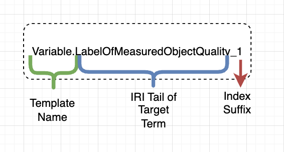

Breaking Abstraction (Unstable)#
In the last section, we talked about how to build functional abstractions to simplify how templates are drawn. In the last section of the user guide, we will show how to break these abstractions to establish new relationships between an abstraction and a term in the diagram.
To motivate this feature, we can look at the sill case of Happy. From the diagram below, we define a person called Happy who exemplifies a Happy Person template. Happy has a height and a weight, but he prefers the terms “hehe” and “hoho” respectively. However, both height and weight are mds:Variables, which concur with the more boring ontology terms of “height” and “weight”. How do you keep Happy happy with a “hehe” and “hoho” heights and weights?
To begin, we examine how the diagram defines the height and weight. Happy is a bearer of Height of Happy and Weight of Happy, which are independent abstractions of the mds:Variable template. We want to expose the Label Of Measured Quality term from both of them to give each a new label through the cco:is tokenized by property.
To do so we use the diagram showed below:
Figure 1. An example of breaking abstraction.
In the diagram, we connect the two variables to a term with a peculiar syntax. The image below shows the parts that make up this syntax:
{kind=link}

Figure 2. Syntax for exposing a term from a template.
These terms then get exposed, which means we can now connect to any other term as usual. In our case, we assign a new label for each, to satisfy Happy’s desires for weird names.
And that is it. ASFALTO currently supports one type of abstraction breaking, but future versions can incorporate other types, depending on user feedback.
If you made it here, congratulations! You have finished the user guide for ASFALTO and you now have a good idea of what the package is capable of doing. If you want to learn more about the functions in ASFALTO, you can check our API documentation. If you have ideas or want to contribute to the package, please refer to the About page.